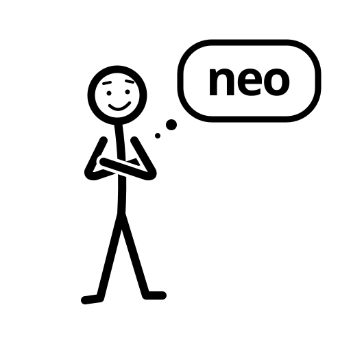
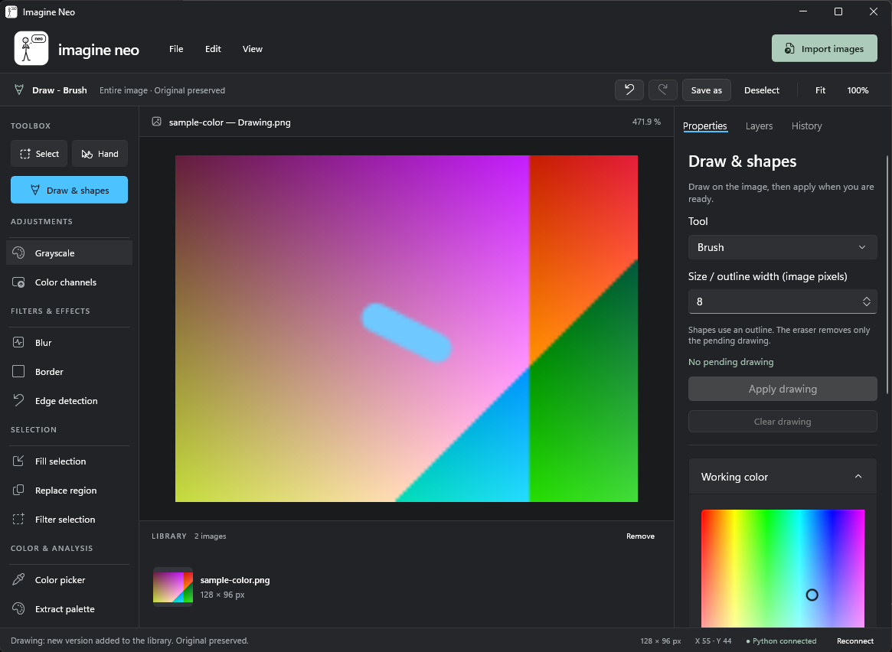
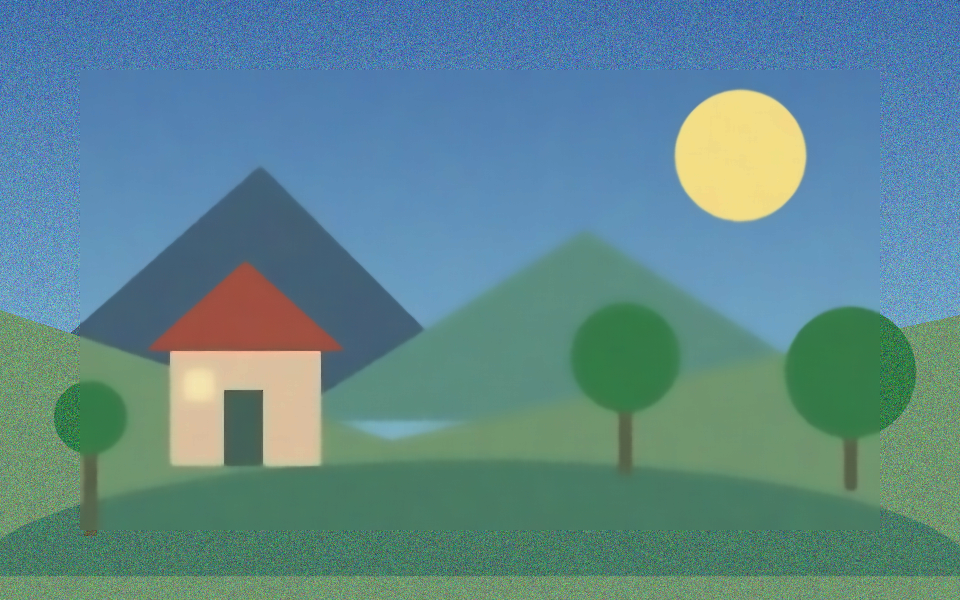

Travailler l’image
Import multiple, sélection rectangulaire, rotation, échelle, niveaux de gris, flous, bordures et contours.

imagine neoWindows · Python · OpenCV
Imagine Neo associe une interface Windows native à des plugins de traitement d’image Python. Explorez, sélectionnez, dessinez et créez vos propres outils.
Version en développement · Code disponible sur GitHub · Traitement local dans l’application
Imagine Neo / atelier de dessin

Capture de l’atelier de dessin lors d’un test de l’interface.
Voir le résultat
Une scène synthétique, traitée par le code réel du projet.

AvantAprèsDébruitage non-local means : le bruit est réduit dans la région centrale ; les pixels hors sélection restent identiques.
Le navigateur affiche des résultats précalculés. Pour traiter vos images, installez l’application Windows.
Le projet
Import multiple, sélection rectangulaire, rotation, échelle, niveaux de gris, flous, bordures et contours.
Masques OpenCV par canal, seuils HSV ou peinture. Choisissez les masques envoyés à chaque plugin.
Une classe Python et un fichier YAML définissent un traitement et ses paramètres dans l’interface commune.
Le bilatéral, la pipette, la palette et certains outils sont incomplets. La segmentation a des échecs de validation connus. L’historique est limité à la session ; l’export enregistre une image PNG ou JPEG.
Consulter l’état des vérifications ↗Créez votre outil
Le catalogue construit les paramètres de votre plugin dans Properties.
ImagePlugin dans plugins/tint/plugin.py.Le type color_bgra affiche une palette avec alpha ; Python reçoit [B, G, R, A]. Le type color_hsv affiche une roue HSV.
Le tutoriel fournit les fichiers complets et vérifie l’original, les masques et la sélection.
Suivre le tutoriel complet ↗file: plugin.py
class: TintPlugin
parameters:
color:
type: color_bgra
label: Couleur de teinte
default: [0, 0, 255, 128]
amount:
type: number
label: Intensité
default: 0.4
min: 0
max: 1| Type | Dans l’interface | Dans Python |
|---|---|---|
color_bgra | Palette couleur et alpha | Liste B, G, R, A |
color_hsv | Roue H/S et luminosité V | Liste H, S, V OpenCV |
number / integer | Champ numérique | float / int |
text + choices | Liste déroulante | str |
boolean | Case à cocher | bool |
Les nouveaux plugins utilisent l’interface commune, sans bouton ni formulaire WinUI dédié. Voir la liaison backend / front ↗
Installer sur un nouveau PC
Windows 11 x64 et une connexion Internet pour la première installation. Git, le SDK .NET 8 et Miniforge doivent être installés avant le lancement.
Dans PowerShell, utilisez Winget. Installez le SDK .NET, qui sert à compiler l’interface, et Miniforge pour Conda.
Sans Winget : Git · SDK .NET 8 x64 · Miniforge Windows x86_64.
winget install --id Git.Git --exact
winget install --id Microsoft.DotNet.SDK.8 --exact --architecture x64
winget install --id CondaForge.Miniforge3 --exact --architecture x64Fermez les anciens terminaux et ouvrez Miniforge Prompt depuis Démarrer. Le script installe Python 3.12, NumPy, OpenCV, pywin32, PyYAML et les outils de test.
git clone https://github.com/professor-kaiser/imagine-neo.git
cd imagine-neo
scripts\setup_conda.cmdToujours dans Miniforge Prompt, à la racine du dépôt. Le lanceur restaure NuGet, compile C#, vérifie les plugins et démarre l’application.
scripts\run_all.cmd
rem Variante optimisée :
scripts\run_all.cmd ReleaseLe parcours actuel utilise les sources, sans installateur autonome. Visual Studio n’est pas nécessaire pour la configuration C# actuelle. Les outils de compilation Windows et le runtime Windows App SDK sont restaurés avec la compilation ; les prérequis Git, SDK .NET et Miniforge restent à installer.
Guide détaillé et dépannage ↗English
Imagine Neo combines C# / WinUI 3 and Win2D with a local Python / NumPy / OpenCV backend. Build YAML plugins, work with image masks and explore real before/after outputs. This is a development preview.
Read the English documentation ↗